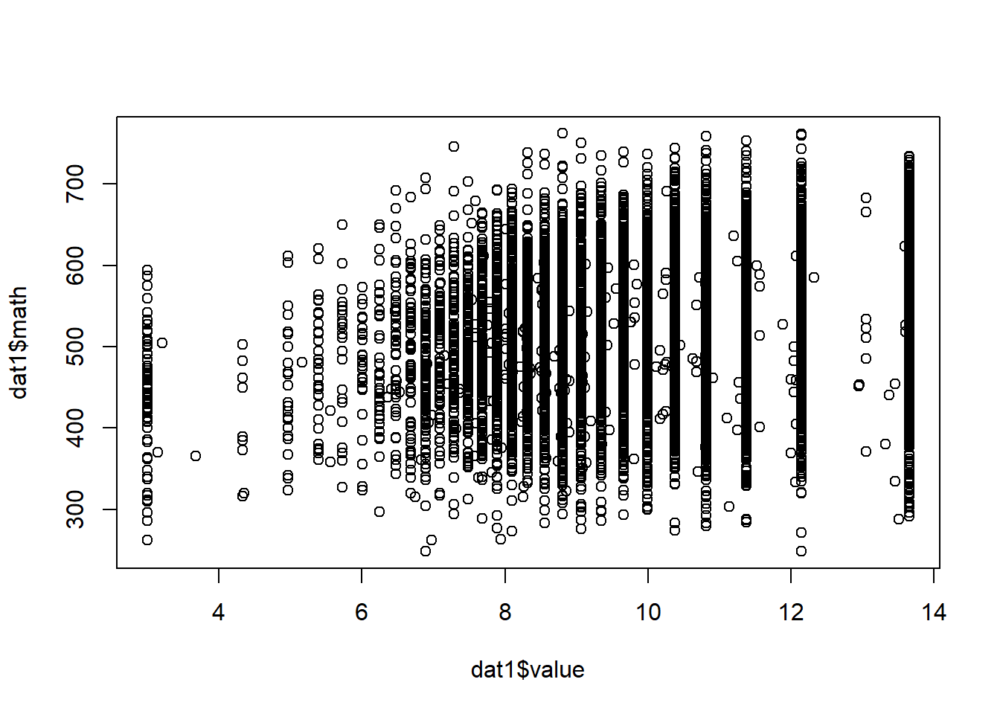

Chapter 2 Review of Basic Statistics
library(rio); library(psych); library(Hmisc); library(ggplot2); library(reshape2); library(QuantPsyc); library(MASS); library(lavaan)2.1 Calculating Variance and Covariance
2.1.1 Covariance
population: \[{{\sigma }_{\text{XY}}}=\frac{\sum{(X-{{\mu }_{\text{X}}})(Y-{{\mu }_{\text{Y}}})}}{{{N}_{pop}}}\] sample: \[{{s}_{XY}}={{\hat{\sigma }}_{XY}}=Cov(X,Y)=\frac{\sum{(X-\bar{X})(Y-\bar{Y})}}{(n-1)}\]
2.1.2 Correlation
population: \[{{\rho }_{\text{XY}}}=\frac{{{\sigma }_{\text{XY}}}}{\sqrt{{{\sigma }_{\text{X}}}^{2}{{\sigma }_{\text{Y}}}^{2}}}\]
sample: \[{{r}_{\text{XY}}}={{\hat{\rho }}_{\text{XY}}}=\frac{Cov(X,Y)}{\sqrt{{{s}_{\text{X}}}^{2}{{s}_{\text{Y}}}^{2}}}\]
2.1.3 Using Matrix Algebra
Suppose we have a 5 by 2 data matrix X (2 variables and 5 participants, for example). $${} = $$
First, we calculate the deviation score matrix \({{\bf{X}}_{\bf{d}}}\).
\[{{\mathbf{X}}_{d}}\text{=}\mathbf{X-\bar{X}}=\left[ \begin{matrix} 1 & 3 \\ 4 & -5 \\ 1 & 7 \\ 3 & 2 \\ 7 & -1 \\ \end{matrix} \right]-\left[ \begin{matrix} 3.2 & 1.2 \\ 3.2 & 1.2 \\ 3.2 & 1.2 \\ 3.2 & 1.2 \\ 3.2 & 1.2 \\ \end{matrix} \right]=\left[ \begin{matrix} -2.2 & 1.8 \\ 0.8 & -6.2 \\ -2.2 & 5.8 \\ -0.2 & 0.8 \\ 3.8 & -2.2 \\ \end{matrix} \right]\]
Next, we multiple the transpose of \({{\bf{X}}_{\bf{d}}}\) ( \({{\bf{X}}_{\bf{d}}}^{\bf{'}}\) ) by \({{\bf{X}}_{\bf{d}}}\) itself using matrix operations. We will get the deviation SSCP (sums of squares and cross products) matrix.
Deviation SSCP matrix:
\[{{\mathbf{X}}_{\mathbf{d}}}'{{\mathbf{X}}_{\mathbf{d}}}=\sum{{{x}_{i}}{{x}_{j}}=\left[ \begin{matrix}
\sum{x_{1}^{2}} & \sum{{{x}_{1}}{{x}_{2}}} \\
\sum{{{x}_{2}}{{x}_{1}}} & \sum{x_{2}^{2}} \\
\end{matrix} \right]}=\left[ \begin{matrix}
24.8 & -30.2 \\
-30.2 & 80.8 \\
\end{matrix} \right]\]
(Note: Lower case \({{x}_{i}}\)’s represent deviation scores.)
Since variance of of the first variable \(X_1\) is \(\frac{1}{N-1}\sum{x_{1}^{2}}\) and the covariance between \(X_1\) and \(X_2\) is \(\frac{1}{N-1}\sum{{{x}_{1}}{{x}_{2}}}\), the variance and covariance matrix (usually denoted by S) can be obtained by multiplying \(\frac{1}{N-1}\) to the deviation score SSCP:
Variance and Covariance matrix: \[\mathbf{S}=\frac{1}{5-1}\left[ \begin{matrix} 24.8 & -30.2 \\ -30.2 & 80.8 \\ \end{matrix} \right]=\left[ \begin{matrix} 6.2 & -7.55 \\ -7.55 & 20.2 \\ \end{matrix} \right]\]
$${}$$
Sample Covariance Matrix S
$${}$$
Sample Correlation R $${}$$
Elements in sample covariance matrix divided by \({s_i}{s_j}\) would result in the sample correlation matrix.
Elements in sample correlation matrix multiplied by \({s_i}{s_j}\) would result in the sample covariance matrix.
2.2 Use R for Basic Statistics
2.2.1 Import and export data
mydata <- import("data/example.sav")
# head(mydata) # view first 6 observationsexport(mydata, file = "data/dataset_example.csv")
export(mydata, file = "data/dataset_example.xlsx")2.2.2 Several functions for basic data management
names(mydata)[names(mydata) == "ITSEX"] <- "gender" #rename a variable
names(mydata)[names(mydata) == "BSMMAT01"] <- "math" #rename another variable for math score
names(mydata)[names(mydata) == "BSBGHER"] <- "resource" #education resource
names(mydata)[names(mydata) == "BSBGSCM"] <- "confidence" #confidence in math
names(mydata)[names(mydata) == "BSBGSVM"] <- "value" #valuing math
names(mydata)[names(mydata) == "BSBGSSB"] <- "belonging" #sense of belonging
var <- c("gender", "math", "resource", "confidence", "value", "belonging")
dat1 <- mydata[, var] #subset data
dat2 <- na.omit(dat1) #listwise deletion
dat1$gender_c <- factor(dat1$gender) #create a categorical variable for `gender`
levels(dat1$gender_c) <- c("f", "m") #change levels for `gender` variable2.2.3 Some descriptive statistics
summary(dat1)
table(dat1$gender_c) #compute frequencies for categorical variables
psych::describe(dat1) #compute descriptives for quantitative variables. Need to install and load the `psych` package
attach(dat1) # save some typing. Alternatively, `math <- dat1$BSMMAT01` to create a separate vector.## The following object is masked _by_ .GlobalEnv:
##
## gendermean(math, na.rm = TRUE)
median(math, na.rm = TRUE)
var(math, na.rm = TRUE)
sd(math, na.rm = TRUE)
quantile(math, na.rm = TRUE)
detach(dat1)2.2.4 Check normality
shapiro.test(dat1$math)You got an error message.
The Shapiro-Wilk test is for small to moderate samples.
set.seed(12345) #for reproducibility
selected <- sample(nrow(dat1), 100) #randomly selection 100 numbers from 1 through the sample size
dat1_small <- dat1[selected,] #create a smaller dataset of 100 students
shapiro.test(dat1_small$math)##
## Shapiro-Wilk normality test
##
## data: dat1_small$math
## W = 0.97872, p-value = 0.10562.2.5 Check linearity
plot(dat2$confidence, dat2$math)
abline(lm(math ~ confidence, data =dat2), col = "red")2.2.6 Pearson’s product moment correlation
Correlation between two variables, hypothesis test, and confidence interval.
cor.test(dat1$resource, dat1$math)##
## Pearson's product-moment correlation
##
## data: dat1$resource and dat1$math
## t = 42.923, df = 10116, p-value < 2.2e-16
## alternative hypothesis: true correlation is not equal to 0
## 95 percent confidence interval:
## 0.3759021 0.4088708
## sample estimates:
## cor
## 0.3925126All pairwise correlations.
cor(dat1[,var], use = "pairwise.complete.obs") #for numeric variables only; "gender" is still a numeric variable!## gender math resource confidence value belonging
## gender 1.000000000 0.01305597 -0.0281559 0.0719095 0.03690314 0.007168246
## math 0.013055968 1.00000000 0.3925126 0.4280530 0.16511215 0.221113350
## resource -0.028155898 0.39251256 1.0000000 0.1512655 0.10208246 0.152041678
## confidence 0.071909498 0.42805300 0.1512655 1.0000000 0.37535602 0.280950896
## value 0.036903141 0.16511215 0.1020825 0.3753560 1.00000000 0.366637734
## belonging 0.007168246 0.22111335 0.1520417 0.2809509 0.36663773 1.000000000round(cor(dat1[,var], use = "pairwise.complete.obs"), 2) #round to 2 decimal places## gender math resource confidence value belonging
## gender 1.00 0.01 -0.03 0.07 0.04 0.01
## math 0.01 1.00 0.39 0.43 0.17 0.22
## resource -0.03 0.39 1.00 0.15 0.10 0.15
## confidence 0.07 0.43 0.15 1.00 0.38 0.28
## value 0.04 0.17 0.10 0.38 1.00 0.37
## belonging 0.01 0.22 0.15 0.28 0.37 1.00Correlations and significance levels for the correlation matrix.
Need to install and load the Hmisc package.
Need to coerce from dataframe to matrix to get both a correlation matrix and p-values.
install.packages("Hmisc")
library(Hmisc)df <- as.matrix(dat1[,var]) # numeric variables only
rcorr(df)## gender math resource confidence value belonging
## gender 1.00 0.01 -0.03 0.07 0.04 0.01
## math 0.01 1.00 0.39 0.43 0.17 0.22
## resource -0.03 0.39 1.00 0.15 0.10 0.15
## confidence 0.07 0.43 0.15 1.00 0.38 0.28
## value 0.04 0.17 0.10 0.38 1.00 0.37
## belonging 0.01 0.22 0.15 0.28 0.37 1.00
##
## n
## gender math resource confidence value belonging
## gender 10217 10217 10117 10052 10014 10111
## math 10217 10221 10118 10053 10015 10112
## resource 10117 10118 10118 10017 9978 10073
## confidence 10052 10053 10017 10053 10010 10035
## value 10014 10015 9978 10010 10015 9998
## belonging 10111 10112 10073 10035 9998 10112
##
## P
## gender math resource confidence value belonging
## gender 0.1870 0.0046 0.0000 0.0002 0.4711
## math 0.1870 0.0000 0.0000 0.0000 0.0000
## resource 0.0046 0.0000 0.0000 0.0000 0.0000
## confidence 0.0000 0.0000 0.0000 0.0000 0.0000
## value 0.0002 0.0000 0.0000 0.0000 0.0000
## belonging 0.4711 0.0000 0.0000 0.0000 0.00002.3 Use R for Graphing Data
2.3.1 Use plot()
Use browseURL("https://datalab.cc/rcolors") to view different colors and methods to refer to them.
Use ?palette for palettes in R; use palette() for current palette
plot(dat1$value, dat1$math)
plot(dat1$value, jitter(dat1$math)) # add some random noise to Yplot(dat1$value, jitter(dat1$math), xlab = "Valuing Math", ylab = "Math Score") # change labelsplot(dat1$value, jitter(dat1$math), xlab = "Valuing Math", ylab = "Math Score", col = "red") # change color2.3.2 Use ggplot2 package
Read Chapter 4 of textbook Field, Miles, Field (2012).
install.packages("ggplot2")
library(ggplot2)ggplot(dat1, aes(math)) +
theme(legend.position = "none") +
geom_histogram(aes(y = ..density..), colour = "black", fill = "white") +
labs(x = "Math", y = "Density") +
stat_function(fun = dnorm, args = list(mean = mean(dat1$math, na.rm = TRUE), sd = sd(dat1$math, na.rm = TRUE)), colour = "red", size = 1)## `stat_bin()` using `bins = 30`. Pick better value with `binwidth`.
2.4 Use R to Graph a Correlation Matrix
2.4.1 Use plot()
plot(dat1[,var])2.4.2 Use ggplot()
install.packages("reshape2")
library(reshape2)(cor_matrix <- cor(dat1[,var], use = "pairwise.complete.obs"))## gender math resource confidence value belonging
## gender 1.000000000 0.01305597 -0.0281559 0.0719095 0.03690314 0.007168246
## math 0.013055968 1.00000000 0.3925126 0.4280530 0.16511215 0.221113350
## resource -0.028155898 0.39251256 1.0000000 0.1512655 0.10208246 0.152041678
## confidence 0.071909498 0.42805300 0.1512655 1.0000000 0.37535602 0.280950896
## value 0.036903141 0.16511215 0.1020825 0.3753560 1.00000000 0.366637734
## belonging 0.007168246 0.22111335 0.1520417 0.2809509 0.36663773 1.000000000(melt_cor_matrix <- melt(cor_matrix))## Warning in type.convert.default(X[[i]], ...): 'as.is' should be specified by the caller; using TRUE
## Warning in type.convert.default(X[[i]], ...): 'as.is' should be specified by the caller; using TRUE## X1 X2 value
## 1 gender gender 1.000000000
## 2 math gender 0.013055968
## 3 resource gender -0.028155898
## 4 confidence gender 0.071909498
## 5 value gender 0.036903141
## 6 belonging gender 0.007168246
## 7 gender math 0.013055968
## 8 math math 1.000000000
## 9 resource math 0.392512564
## 10 confidence math 0.428053003
## 11 value math 0.165112146
## 12 belonging math 0.221113350
## 13 gender resource -0.028155898
## 14 math resource 0.392512564
## 15 resource resource 1.000000000
## 16 confidence resource 0.151265456
## 17 value resource 0.102082458
## 18 belonging resource 0.152041678
## 19 gender confidence 0.071909498
## 20 math confidence 0.428053003
## 21 resource confidence 0.151265456
## 22 confidence confidence 1.000000000
## 23 value confidence 0.375356020
## 24 belonging confidence 0.280950896
## 25 gender value 0.036903141
## 26 math value 0.165112146
## 27 resource value 0.102082458
## 28 confidence value 0.375356020
## 29 value value 1.000000000
## 30 belonging value 0.366637734
## 31 gender belonging 0.007168246
## 32 math belonging 0.221113350
## 33 resource belonging 0.152041678
## 34 confidence belonging 0.280950896
## 35 value belonging 0.366637734
## 36 belonging belonging 1.000000000ggplot(data = melt_cor_matrix,
aes(x = X1, y = X2, fill = value)) + geom_tile()2.5 Use R to Generate Random Data
2.5.1 Sampling distribution
Generate data.
size <- 50
sample_means <- NULL
for (i in 1:1000) {
samp <- rnorm(size, 10, 5)
sample_means[i] <- mean(samp)
}Calculate the mean and SD of the sampling distribution.
mean(sample_means) # population mean is 10## [1] 10.007sd(sample_means) # SD of the sampling distribution## [1] 0.708293Use hist() to graph the sample means for sampling distribution.
hist(sample_means, breaks = 50, main = "N= 50", xlab = "Sample Means", probability = TRUE)
Use ggplot() to graph the sample means for sampling distribution.
df_sample_means <- data.frame(i = 1:1000, sample_means) # data for ggplot has to be a data frame.
ggplot(df_sample_means, aes(x = sample_means)) +
geom_histogram(aes(y = ..density..), colour = "black", fill = "white") +
labs(x = "Sample Means", y = "Density") +
stat_function(fun = dnorm, args = list(mean = mean(df_sample_means$sample_means, na.rm = TRUE), sd = sd(df_sample_means$sample_means, na.rm = TRUE)), colour = "red", size = 1)## `stat_bin()` using `bins = 30`. Pick better value with `binwidth`.
2.5.2 Simulate data from a model
####Simulate data based on a regression model####
Simple Linear Regression with 0.7 correlation between x and y
x <- rnorm(1000, 10, 2)
Zx <- scale(x)
Zy <- .7*Zx + rnorm(1000, 0, sqrt(1-(.7^2)))
y <- 3*Zy + 5
dat1 <- data.frame(x,y)
cor(x,y)## [,1]
## [1,] 0.693814summary(lm(Zy ~ 0 + Zx))##
## Call:
## lm(formula = Zy ~ 0 + Zx)
##
## Residuals:
## Min 1Q Median 3Q Max
## -1.93796 -0.49421 -0.01251 0.51644 2.37284
##
## Coefficients:
## Estimate Std. Error t value Pr(>|t|)
## Zx 0.71276 0.02341 30.44 <2e-16 ***
## ---
## Signif. codes: 0 '***' 0.001 '**' 0.01 '*' 0.05 '.' 0.1 ' ' 1
##
## Residual standard error: 0.74 on 999 degrees of freedom
## Multiple R-squared: 0.4813, Adjusted R-squared: 0.4807
## F-statistic: 926.8 on 1 and 999 DF, p-value: < 2.2e-16summary(lm(y ~x))##
## Call:
## lm(formula = y ~ x)
##
## Residuals:
## Min 1Q Median 3Q Max
## -5.7646 -1.4334 0.0117 1.5986 7.1678
##
## Coefficients:
## Estimate Std. Error t value Pr(>|t|)
## (Intercept) -5.85417 0.36189 -16.18 <2e-16 ***
## x 1.07541 0.03533 30.44 <2e-16 ***
## ---
## Signif. codes: 0 '***' 0.001 '**' 0.01 '*' 0.05 '.' 0.1 ' ' 1
##
## Residual standard error: 2.221 on 998 degrees of freedom
## Multiple R-squared: 0.4814, Adjusted R-squared: 0.4809
## F-statistic: 926.3 on 1 and 998 DF, p-value: < 2.2e-16QuantPsyc::lm.beta(lm(y ~x))## x
## 0.693814Multiple Linear Regression with with known population standardized regression coefficients
x1 <- rnorm(1000, 10, 2)
x2 <- rnorm(1000, 5, 1)
x3 <- x1*x2
Zx1 <- scale(x1)
Zx2 <- scale(x2)
Zx3 <- scale(x3)
Zy <- .7*Zx1 + .5*Zx2 + 2*Zx3 + rnorm(1000, 0, sqrt(1-(.49+.25+.04)))
y <- 3*Zy + 5
dat2 <- data.frame(x1, x2, x3, y)
cor(dat2)## x1 x2 x3 y
## x1 1.00000000 -0.04286003 0.6913052 0.7157652
## x2 -0.04286003 1.00000000 0.6791463 0.6401593
## x3 0.69130517 0.67914628 1.0000000 0.9848538
## y 0.71576517 0.64015925 0.9848538 1.0000000summary(lm(Zy ~ 0 + x1 + x2 + x3))##
## Call:
## lm(formula = Zy ~ 0 + x1 + x2 + x3)
##
## Residuals:
## Min 1Q Median 3Q Max
## -2.66804 -0.42986 -0.03501 0.40424 2.11467
##
## Coefficients:
## Estimate Std. Error t value Pr(>|t|)
## x1 -0.964805 0.011053 -87.29 <2e-16 ***
## x2 -2.076678 0.021641 -95.96 <2e-16 ***
## x3 0.402948 0.003071 131.20 <2e-16 ***
## ---
## Signif. codes: 0 '***' 0.001 '**' 0.01 '*' 0.05 '.' 0.1 ' ' 1
##
## Residual standard error: 0.6679 on 997 degrees of freedom
## Multiple R-squared: 0.9463, Adjusted R-squared: 0.9462
## F-statistic: 5859 on 3 and 997 DF, p-value: < 2.2e-16summary(lm(y ~ x1 + x2 + x3))##
## Call:
## lm(formula = y ~ x1 + x2 + x3)
##
## Residuals:
## Min 1Q Median 3Q Max
## -4.7735 -1.0049 -0.0068 0.9343 4.8428
##
## Coefficients:
## Estimate Std. Error t value Pr(>|t|)
## (Intercept) -35.01244 1.26879 -27.595 < 2e-16 ***
## x1 0.98700 0.12530 7.877 8.72e-15 ***
## x2 1.39397 0.24608 5.665 1.93e-08 ***
## x3 0.46847 0.02437 19.227 < 2e-16 ***
## ---
## Signif. codes: 0 '***' 0.001 '**' 0.01 '*' 0.05 '.' 0.1 ' ' 1
##
## Residual standard error: 1.418 on 996 degrees of freedom
## Multiple R-squared: 0.9731, Adjusted R-squared: 0.9731
## F-statistic: 1.203e+04 on 3 and 996 DF, p-value: < 2.2e-16QuantPsyc::lm.beta(lm(y ~ x1 + x2 + x3))## x1 x2 x3
## 0.2191362 0.1551256 0.7280108Multiple Linear Regression with known population unstandardized regression coefficients
b0 <- 6
b1 <- -3
b2 <- 4
sd <- 2 # sd for the error distribution
x1 <- rnorm(1000, 10, 2)
x2 <- rnorm(1000, 5, 1)
y <- b0 + b1*x1 + b2*x2 + rnorm(1000, 0, sd)
dat3 <- data.frame(x1, x2, y)
summary(lm(y ~ x1 + x2))##
## Call:
## lm(formula = y ~ x1 + x2)
##
## Residuals:
## Min 1Q Median 3Q Max
## -7.0986 -1.3831 0.0726 1.3308 6.0776
##
## Coefficients:
## Estimate Std. Error t value Pr(>|t|)
## (Intercept) 5.75496 0.46551 12.36 <2e-16 ***
## x1 -2.93915 0.03371 -87.19 <2e-16 ***
## x2 3.92356 0.06521 60.17 <2e-16 ***
## ---
## Signif. codes: 0 '***' 0.001 '**' 0.01 '*' 0.05 '.' 0.1 ' ' 1
##
## Residual standard error: 2.034 on 997 degrees of freedom
## Multiple R-squared: 0.916, Adjusted R-squared: 0.9159
## F-statistic: 5439 on 2 and 997 DF, p-value: < 2.2e-16MUltivariate Data Structure with known correlations
sigma <- matrix(c(1.0, 0.7, 0.5, 0.3,
0.7, 1.0, 0.4, 0.4,
0.5, 0.4, 1.0, 0.5,
0.3, 0.4, 0.5, 1.0), nrow = 4)
dat4 <- data.frame(MASS::mvrnorm(n = 1000, mu = rep(0, 4), Sigma = sigma, empirical = TRUE)) #replicate the exact correlations among the simulated variables
summary(dat4)## X1 X2 X3 X4
## Min. :-2.92187 Min. :-3.12370 Min. :-3.24050 Min. :-3.65926
## 1st Qu.:-0.67253 1st Qu.:-0.69337 1st Qu.:-0.68981 1st Qu.:-0.65546
## Median :-0.06499 Median :-0.02844 Median : 0.04108 Median :-0.03206
## Mean : 0.00000 Mean : 0.00000 Mean : 0.00000 Mean : 0.00000
## 3rd Qu.: 0.69003 3rd Qu.: 0.67110 3rd Qu.: 0.68982 3rd Qu.: 0.67722
## Max. : 3.45489 Max. : 2.97990 Max. : 3.14553 Max. : 3.55700cor(dat4)## X1 X2 X3 X4
## X1 1.0 0.7 0.5 0.3
## X2 0.7 1.0 0.4 0.4
## X3 0.5 0.4 1.0 0.5
## X4 0.3 0.4 0.5 1.0Confirmatory Factor Analysis Model
pop.model <- '
f1 =~ 0.9*x1 + .7*x2 + .5*x3 + .3*x4
f2 =~ 0.9*x5 + .7*x6 + .5*x7 + .3*x8
f1 ~~ 1*f1
f1 ~~ 0.5*f2'
dat5 <- lavaan::simulateData(model = pop.model, sample.nobs = 1000)
summary(dat5)## x1 x2 x3 x4 x5 x6 x7
## Min. :-3.83863 Min. :-3.81556 Min. :-3.54199 Min. :-3.28999 Min. :-4.03083 Min. :-4.670419 Min. :-3.666570
## 1st Qu.:-0.81480 1st Qu.:-0.77514 1st Qu.:-0.68091 1st Qu.:-0.72620 1st Qu.:-0.83746 1st Qu.:-0.809362 1st Qu.:-0.761440
## Median : 0.04831 Median : 0.04984 Median : 0.06221 Median : 0.03548 Median :-0.01814 Median :-0.009423 Median : 0.001263
## Mean : 0.07755 Mean : 0.04314 Mean : 0.05840 Mean : 0.01341 Mean : 0.06853 Mean :-0.018588 Mean : 0.025038
## 3rd Qu.: 0.96484 3rd Qu.: 0.84818 3rd Qu.: 0.83818 3rd Qu.: 0.71464 3rd Qu.: 1.04531 3rd Qu.: 0.858382 3rd Qu.: 0.777438
## Max. : 5.03915 Max. : 4.15661 Max. : 3.56051 Max. : 3.22474 Max. : 4.73594 Max. : 3.801685 Max. : 4.878669
## x8
## Min. :-3.797992
## 1st Qu.:-0.682778
## Median : 0.018717
## Mean :-0.005384
## 3rd Qu.: 0.680474
## Max. : 3.741254analysis.model <- '
f1 =~ x1 + x2 + x3 + x4
f2 =~ x5 + x6 + x7 +x8
f1 ~~ f2'
fit.model <- lavaan::sem(model = analysis.model, data = dat5, std.lv = TRUE)
summary(fit.model)## lavaan 0.6-8 ended normally after 24 iterations
##
## Estimator ML
## Optimization method NLMINB
## Number of model parameters 17
##
## Number of observations 1000
##
## Model Test User Model:
##
## Test statistic 24.440
## Degrees of freedom 19
## P-value (Chi-square) 0.180
##
## Parameter Estimates:
##
## Standard errors Standard
## Information Expected
## Information saturated (h1) model Structured
##
## Latent Variables:
## Estimate Std.Err z-value P(>|z|)
## f1 =~
## x1 0.886 0.057 15.663 0.000
## x2 0.629 0.049 12.919 0.000
## x3 0.482 0.045 10.754 0.000
## x4 0.337 0.043 7.883 0.000
## f2 =~
## x5 0.943 0.054 17.552 0.000
## x6 0.734 0.048 15.264 0.000
## x7 0.566 0.043 13.047 0.000
## x8 0.310 0.040 7.817 0.000
##
## Covariances:
## Estimate Std.Err z-value P(>|z|)
## f1 ~~
## f2 0.445 0.046 9.780 0.000
##
## Variances:
## Estimate Std.Err z-value P(>|z|)
## .x1 0.915 0.087 10.485 0.000
## .x2 1.062 0.063 16.767 0.000
## .x3 1.056 0.055 19.259 0.000
## .x4 1.057 0.051 20.908 0.000
## .x5 0.938 0.084 11.122 0.000
## .x6 1.042 0.066 15.827 0.000
## .x7 1.008 0.054 18.581 0.000
## .x8 0.985 0.046 21.259 0.000
## f1 1.000
## f2 1.000